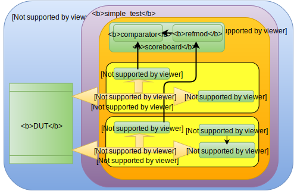

The Universal Verification Methodology (UVM) has become the standard for verification of integrated circuits design. The UVM class library facilitates the implementation of testbenches. Each element of a UVM testbench is a component derived from an existing UVM class.
Each class has simulation phases that are ordered execution steps implemented as methods. The most important UVM phases are:
- the build_phase is responsible for the creation and configuration of the testbench structure constructing the components of the hierarchy
- the connect_phase is used to connect different sub components in a class
- the run_phase is the main phase, where the simulation is executed
- the report_phase can be used to display results from the simulation
To implement some important methods in classes and variables, UVM provides the UVM Macros. The most common UVM macros are:
- uvm_component_utils: registers a new class type when the class derives from the class uvm_component
- uvm_object_utils: similar to uvm_component_utils, but the class is derived from the class uvm_object
- uvm_field_int: registers a variable in the UVM factory. This macro provides functions like copy(), compare() and print()
- uvm_info: prints messages during simulation time in the environment
- uvm_error: this macro sends messages with error logs
To explain the structure of a UVM environment a simple adder will be used as the Design Under Test (DUT) in our case study. The UVM testbench is illustrated in Figure (1). The DUT is the hardware implementation that interacts with the testbench in order to verify its functionality.
 Figure (1): UVM testbench{kind=link}
To stimulate the DUT, a class named sequencer generates sequences of data to be transmitted to the DUT. Since the sequencer sends transactions (packets of data in a high level of abstraction) and the DUT only understands the data coming from the interface, a class called driver converts packets of data to signals feeding the DUT.
The data crossing the interface should be captured for a later validation of the stimuli. Since the driver only converts transactions to signals, another block performs the inverse function of the driver. The monitor is a component that reads the communication between the driver and the DUT and retrieves the transaction. The class monitor reads the data on the interface and converts it into transaction to be compared with the reference model.
The reference model (refmod) is a model conceived in an early phase, before the RTL implementation, assumed as ideal. It simulates the DUT at a high level of abstraction.
An agent is a class that typically contains three components: a sequencer, a driver and a monitor. There are two types of agents: Active Agent, which contains all the three components and the Passive Agent, which only contains the monitor and the driver. The agent contains functions for the build phase to create hierarchies and for the connect phase to connect the components.
A comparator is a class that compares data between the reference model and the DUT. The reference model and the comparator form the scoreboard that checks whether the transactions produced by the DUT are correct or not. One or more agents and the scoreboard form the Environment class env. The test class is responsible for performing the tests creating the environment and connecting the sequence to the sequencer. And finally, the top module instantiates the DUT and the testbench.
Learning in a practical way
The functional verification of the adder module will be divided into the following modules and classes:
interface input_if(input clk, rst); logic [31:0] A, B; logic valid, ready; modport port(input clk, rst, A, B, valid, output ready); endinterface
interface output_if(input clk, rst); logic [31:0] data; logic valid, ready; modport port(input clk, rst, output valid, data, ready); endinterface
module adder(input_if.port inter, output_if.port out_inter, output state); enum logic [1:0] {INITIAL,WAIT,SEND} state; always_ff @(posedge inter.clk) if(inter.rst) begin inter.ready <= 0; out_inter.data <= 'x; out_inter.valid <= 0; state <= INITIAL; end else case(state) INITIAL: begin inter.ready <= 1; state <= WAIT; end WAIT: begin if(inter.valid) begin inter.ready <= 0; out_inter.data <= inter.A + inter.B; out_inter.valid <= 1; state <= SEND; end end SEND: begin if(out_inter.ready) begin out_inter.valid <= 0; inter.ready <= 1; state <= WAIT; end end endcase endmodule: adder
class packet_in extends uvm_sequence_item; rand integer A; rand integer B; `uvm_object_utils_begin(packet_in) `uvm_field_int(A, UVM_ALL_ON|UVM_HEX) `uvm_field_int(B, UVM_ALL_ON|UVM_HEX) `uvm_object_utils_end function new(string name="packet_in"); super.new(name); endfunction: new endclass: packet_in
class packet_out extends uvm_sequence_item; rand integer data; `uvm_object_utils_begin(packet_out) `uvm_field_int(data, UVM_ALL_ON|UVM_HEX) `uvm_object_utils_end function new(string name="packet_out"); super.new(name); endfunction: new endclass: packet_out
class sequence_in extends uvm_sequence #(packet_in); `uvm_object_utils(sequence_in) function new(string name="sequence_in"); super.new(name); endfunction: new task body; packet_in tx; forever begin tx = packet_in::type_id::create("tx"); start_item(tx); assert(tx.randomize()); finish_item(tx); end endtask: body endclass: sequence_in
class sequencer extends uvm_sequencer #(packet_in); `uvm_component_utils(sequencer) function new (string name = "sequencer", uvm_component parent = null); super.new(name, parent); endfunction endclass: sequencer
typedef virtual input_if input_vif; class driver extends uvm_driver #(packet_in); `uvm_component_utils(driver) input_vif vif; event begin_record, end_record; function new(string name = "driver", uvm_component parent = null); super.new(name, parent); endfunction virtual function void build_phase(uvm_phase phase); super.build_phase(phase); assert(uvm_config_db#(input_vif)::get(this, "", "vif", vif)); endfunction virtual task run_phase(uvm_phase phase); super.run_phase(phase); fork reset_signals(); get_and_drive(phase); record_tr(); join endtask virtual protected task reset_signals(); wait (vif.rst === 1); forever begin vif.valid <= '0; vif.A <= 'x; vif.B <= 'x; @(posedge vif.rst); end endtask virtual protected task get_and_drive(uvm_phase phase); wait(vif.rst === 1); @(negedge vif.rst); @(posedge vif.clk); forever begin seq_item_port.get(req); -> begin_record; drive_transfer(req); end endtask virtual protected task drive_transfer(packet_in tr); vif.A = tr.A; vif.B = tr.B; vif.valid = 1; @(posedge vif.clk) while(!vif.ready) @(posedge vif.clk); -> end_record; @(posedge vif.clk); //hold time vif.valid = 0; @(posedge vif.clk); endtask virtual task record_tr(); forever begin @(begin_record); begin_tr(req, "driver"); @(end_record); end_tr(req); end endtask endclass
class monitor extends uvm_monitor; input_vif vif; event begin_record, end_record; packet_in tr; uvm_analysis_port #(packet_in) item_collected_port; `uvm_component_utils(monitor) function new(string name, uvm_component parent); super.new(name, parent); item_collected_port = new ("item_collected_port", this); endfunction virtual function void build_phase(uvm_phase phase); super.build_phase(phase); assert(uvm_config_db#(input_vif)::get(this, "", "vif", vif)); tr = packet_in::type_id::create("tr", this); endfunction virtual task run_phase(uvm_phase phase); super.run_phase(phase); fork collect_transactions(phase); record_tr(); join endtask virtual task collect_transactions(uvm_phase phase); wait(vif.rst === 1); @(negedge vif.rst); forever begin do begin @(posedge vif.clk); end while (vif.valid === 0 || vif.ready === 0); -> begin_record; tr.A = vif.A; tr.B = vif.B; item_collected_port.write(tr); @(posedge vif.clk); -> end_record; end endtask virtual task record_tr(); forever begin @(begin_record); begin_tr(tr, "monitor"); @(end_record); end_tr(tr); end endtask endclass
class agent extends uvm_agent; sequencer sqr; driver drv; monitor mon; uvm_analysis_port #(packet_in) item_collected_port; `uvm_component_utils(agent) function new(string name = "agent", uvm_component parent = null); super.new(name, parent); item_collected_port = new("item_collected_port", this); endfunction virtual function void build_phase(uvm_phase phase); super.build_phase(phase); mon = monitor::type_id::create("mon", this); sqr = sequencer::type_id::create("sqr", this); drv = driver::type_id::create("drv", this); endfunction virtual function void connect_phase(uvm_phase phase); super.connect_phase(phase); mon.item_collected_port.connect(item_collected_port); drv.seq_item_port.connect(sqr.seq_item_export); endfunction endclass: agent
typedef virtual output_if output_vif; class driver_out extends uvm_driver #(packet_out); `uvm_component_utils(driver_out) output_vif vif; function new(string name = "driver_out", uvm_component parent = null); super.new(name, parent); endfunction virtual function void build_phase(uvm_phase phase); super.build_phase(phase); assert(uvm_config_db#(output_vif)::get(this, "", "vif", vif)); endfunction virtual task run_phase(uvm_phase phase); super.run_phase(phase); fork reset_signals(); drive(phase); join endtask virtual protected task reset_signals(); wait (vif.rst === 1); forever begin vif.ready <= '0; @(posedge vif.rst); end endtask virtual protected task drive(uvm_phase phase); wait(vif.rst === 1); @(negedge vif.rst); @(posedge vif.clk); vif.ready <= 1; endtask endclass
class monitor_out extends uvm_monitor; `uvm_component_utils(monitor_out) output_vif vif; event begin_record, end_record; packet_out tr; uvm_analysis_port #(packet_out) item_collected_port; function new(string name, uvm_component parent); super.new(name, parent); item_collected_port = new ("item_collected_port", this); endfunction virtual function void build_phase(uvm_phase phase); super.build_phase(phase); assert(uvm_config_db#(output_vif)::get(this, "", "vif", vif)); tr = packet_out::type_id::create("tr", this); endfunction virtual task run_phase(uvm_phase phase); super.run_phase(phase); fork collect_transactions(phase); record_tr(); join endtask virtual task collect_transactions(uvm_phase phase); wait(vif.rst === 1); @(negedge vif.rst); forever begin do begin @(posedge vif.clk); end while (vif.valid === 0 || vif.ready === 0); -> begin_record; tr.data = vif.data; item_collected_port.write(tr); @(posedge vif.clk); -> end_record; end endtask virtual task record_tr(); forever begin @(begin_record); begin_tr(tr, "monitor_out"); @(end_record); end_tr(tr); end endtask endclass
class agent_out extends uvm_agent; driver_out drv; monitor_out mon; uvm_analysis_port #(packet_out) item_collected_port; `uvm_component_utils(agent_out) function new(string name = "agent_out", uvm_component parent = null); super.new(name, parent); item_collected_port = new("item_collected_port", this); endfunction virtual function void build_phase(uvm_phase phase); super.build_phase(phase); mon = monitor_out::type_id::create("mon_out", this); drv = driver_out::type_id::create("drv_out", this); endfunction virtual function void connect_phase(uvm_phase phase); super.connect_phase(phase); mon.item_collected_port.connect(item_collected_port); endfunction endclass: agent_out
class comparator #(type T = packet_out) extends uvm_scoreboard; typedef comparator #(T) this_type; `uvm_component_param_utils(this_type) const static string type_name = "comparator #(T)"; uvm_put_imp #(T, this_type) from_refmod; uvm_analysis_imp #(T, this_type) from_dut; typedef uvm_built_in_converter #( T ) convert; int m_matches, m_mismatches; T exp; bit free; event compared, end_of_simulation; function new(string name, uvm_component parent); super.new(name, parent); from_refmod = new("from_refmod", this); from_dut = new("from_dut", this); m_matches = 0; m_mismatches = 0; exp = new("exp"); free = 1; endfunction virtual function string get_type_name(); return type_name; endfunction task run_phase(uvm_phase phase); phase.raise_objection(this); @(end_of_simulation); phase.drop_objection(this); endtask virtual task put(T t); if(!free) @compared; exp.copy(t); free = 0; @compared; free = 1; endtask virtual function bit try_put(T t); if(free) begin exp.copy(t); free = 0; return 1; end else return 0; endfunction virtual function bit can_put(); return free; endfunction virtual function void write(T rec); if (free) uvm_report_fatal("No expect transaction to compare with", ""); if(!(exp.compare(rec))) begin uvm_report_warning("Comparator Mismatch", ""); m_mismatches++; end else begin uvm_report_info("Comparator Match", ""); m_matches++; end if(m_matches+m_mismatches > 100) -> end_of_simulation; -> compared; endfunction endclass
class env extends uvm_env; agent mst; refmod rfm; agent_out slv; comparator #(packet_out) comp; uvm_tlm_analysis_fifo #(packet_in) to_refmod; `uvm_component_utils(env) function new(string name, uvm_component parent = null); super.new(name, parent); to_refmod = new("to_refmod", this); endfunction virtual function void build_phase(uvm_phase phase); super.build_phase(phase); mst = agent::type_id::create("mst", this); slv = agent_out::type_id::create("slv", this); rfm = refmod::type_id::create("rfm", this); comp = comparator#(packet_out)::type_id::create("comp", this); endfunction virtual function void connect_phase(uvm_phase phase); super.connect_phase(phase); // Connect MST to FIFO mst.item_collected_port.connect(to_refmod.analysis_export); // Connect FIFO to REFMOD rfm.in.connect(to_refmod.get_export); //Connect scoreboard rfm.out.connect(comp.from_refmod); slv.item_collected_port.connect(comp.from_dut); endfunction virtual function void end_of_elaboration_phase(uvm_phase phase); super.end_of_elaboration_phase(phase); endfunction virtual function void report_phase(uvm_phase phase); super.report_phase(phase); `uvm_info(get_type_name(), $sformatf("Reporting matched %0d", comp.m_matches), UVM_NONE) if (comp.m_mismatches) begin `uvm_error(get_type_name(), $sformatf("Saw %0d mismatched samples", comp.m_mismatches)) end endfunction endclass
class simple_test extends uvm_test; env env_h; sequence_in seq; `uvm_component_utils(simple_test) function new(string name, uvm_component parent = null); super.new(name, parent); endfunction virtual function void build_phase(uvm_phase phase); super.build_phase(phase); env_h = env::type_id::create("env_h", this); seq = sequence_in::type_id::create("seq", this); endfunction task run_phase(uvm_phase phase); seq.start(env_h.mst.sqr); endtask: run_phase endclass
import uvm_pkg::*; `include "uvm_macros.svh" `include "./input_if.sv" `include "./output_if.sv" `include "./adder.sv" `include "./packet_in.sv" `include "./packet_out.sv" `include "./sequence_in.sv" `include "./sequencer.sv" `include "./driver.sv" `include "./driver_out.sv" `include "./monitor.sv" `include "./monitor_out.sv" `include "./agent.sv" `include "./agent_out.sv" `include "./refmod.sv" `include "./comparator.sv" `include "./env.sv" `include "./simple_test.sv" //Top module top; logic clk; logic rst; initial begin clk = 0; rst = 1; #22 rst = 0; end always #5 clk = !clk; logic [1:0] state; input_if in(clk, rst); output_if out(clk, rst); adder sum(in, out, state); initial begin `ifdef INCA $recordvars(); `endif `ifdef VCS $vcdpluson; `endif `ifdef QUESTA $wlfdumpvars(); set_config_int("*", "recording_detail", 1); `endif uvm_config_db#(input_vif)::set(uvm_root::get(), "*.env_h.mst.*", "vif", in); uvm_config_db#(output_vif)::set(uvm_root::get(), "*.env_h.slv.*", "vif", out); run_test("simple_test"); end endmodule
Direct Programming Interface (DPI)
SystemVerilog Direct Programming Interface (DPI) is an interface in which SystemVerilog calls functions from foreign languages like C, C++, etc. The DPI consists of two layers: the SystemVerilog layer and the foreign language layer, that are isolated from each other. The code of the refmod is presented below in order to illustrate the usage of DPI. The function sum() is defined in the file external.cpp and once it will be called in the refmod the keyword "external C" should be added before the definition of the function sum().
#include <stdio.h> extern "C" int sum(int a, int b){ return a+b; }
import "DPI-C" context function int sum(int a, int b); class refmod extends uvm_component; `uvm_component_utils(refmod) packet_in tr_in; packet_out tr_out; integer a, b; uvm_get_port #(packet_in) in; uvm_put_port #(packet_out) out; function new(string name = "refmod", uvm_component parent); super.new(name, parent); in = new("in", this); out = new("out", this); endfunction virtual function void build_phase(uvm_phase phase); super.build_phase(phase); tr_out = packet_out::type_id::create("tr_out", this); endfunction: build_phase virtual task run_phase(uvm_phase phase); super.run_phase(phase); forever begin in.get(tr_in); tr_out.data = sum(tr_in.A, tr_in.B); out.put(tr_out); end endtask: run_phase endclass: refmod
A simple Makefile to run the UVM testbench of the adder module is with the VCS tool from Synopsys is shown below. To see transactions and signals with the DVE just type make view_waves in the terminal. A screenshot of the DVE running the simulation can be seen in Figure (2).
sim: clean g++ -c external.cpp -o external.o vcs -full64 -sverilog top.sv -dpi -ntb_opts uvm -debug_pp -timescale=1ns/10ps external.o $ ./simv +UVM_TR_RECORD +UVM_VERBOSITY=HIGH +UVM_TESTNAME=simple_test clean: rm -rf DVEfiles csrc simv simv.daidir ucli.key .vlogansetup.args .vlogansetup.env .vcs_lib_lock simv.vdb AN.DB vc_hdrs.h *.diag *.vpd *tar.gz external.o view_waves: dve &
{kind=link}
References:
[1] Accellera. Universal verification methodology. User's Guide, 2011
[2] LAD UVM Clássico
[3] UVM Guide for Beginners
[4] Simple UVM Testbench - EDA Playground
Also available in GitHub.